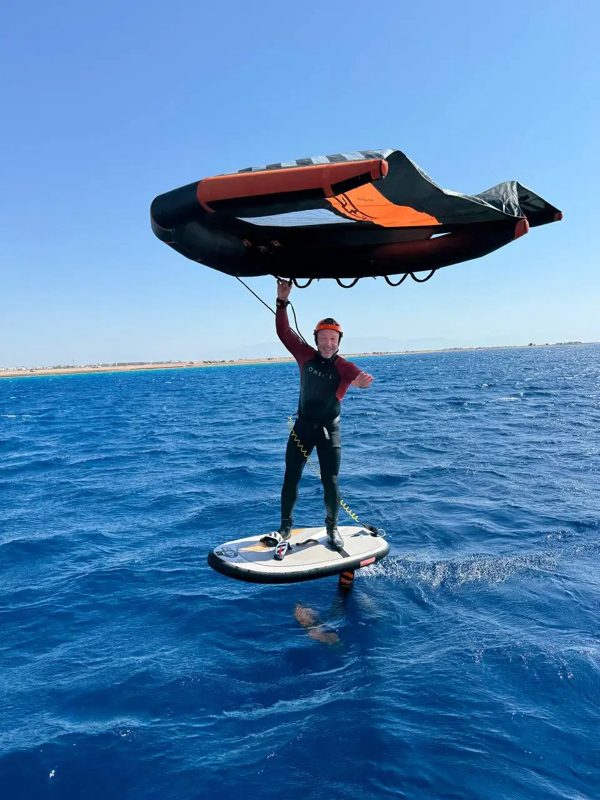
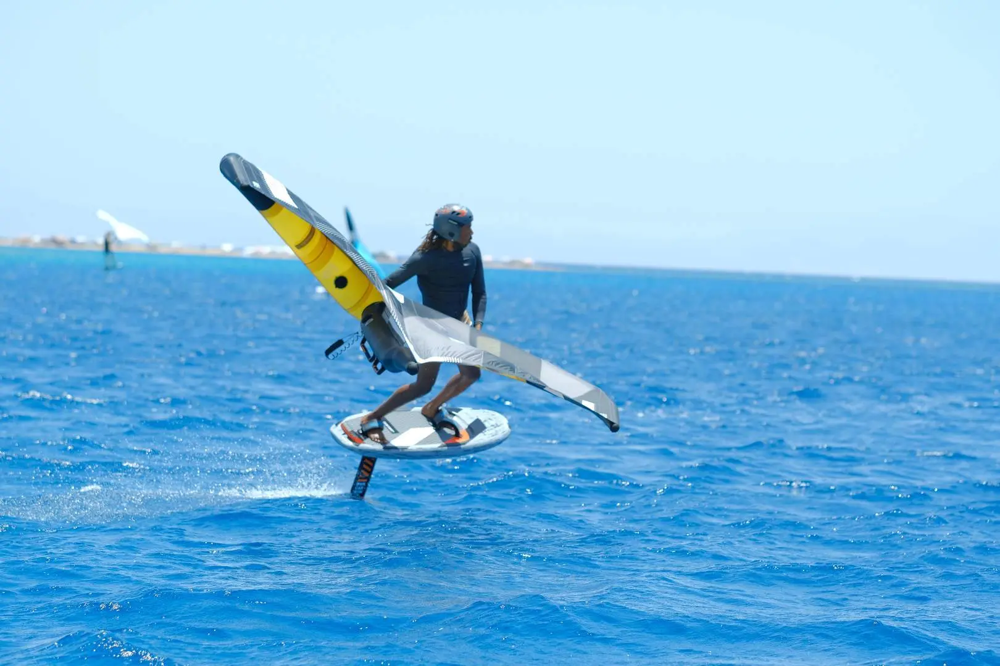
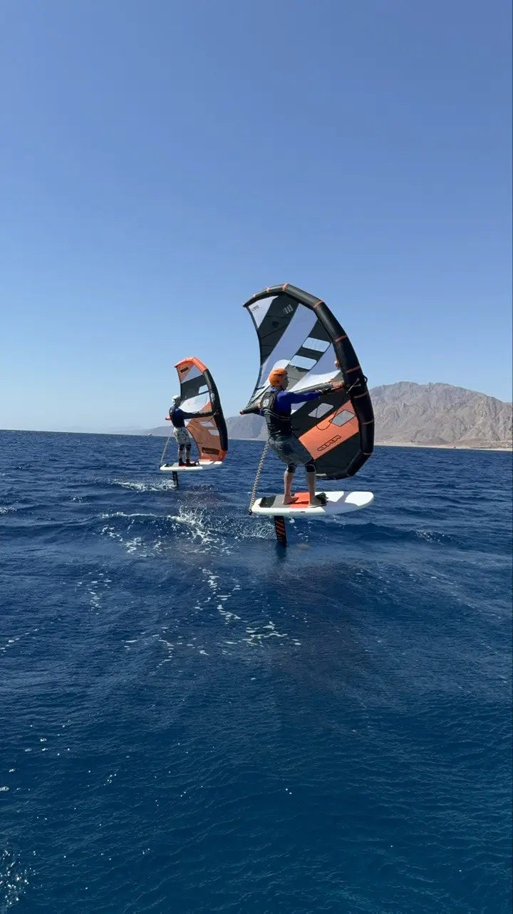
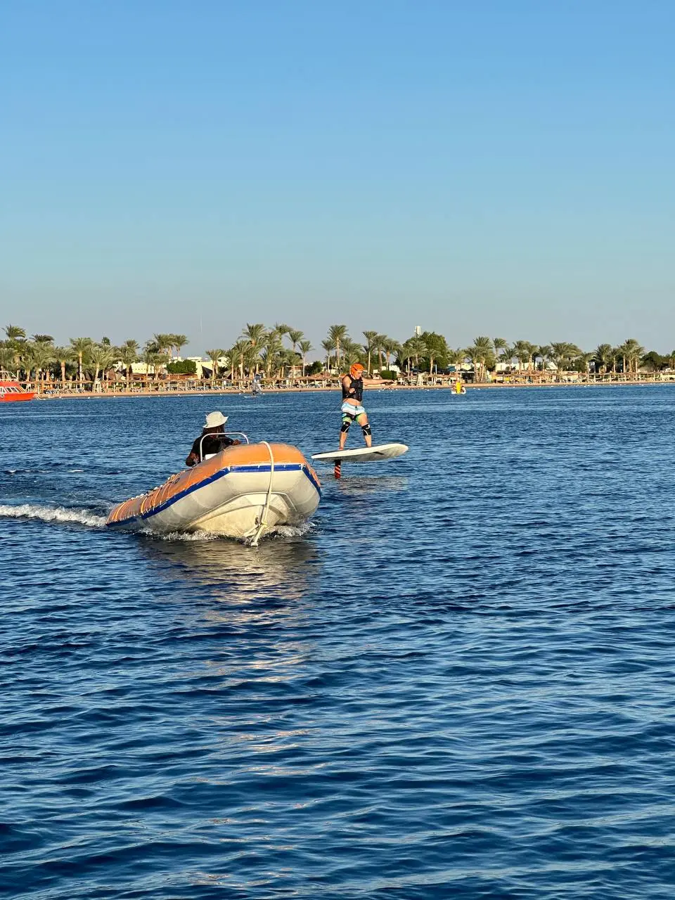
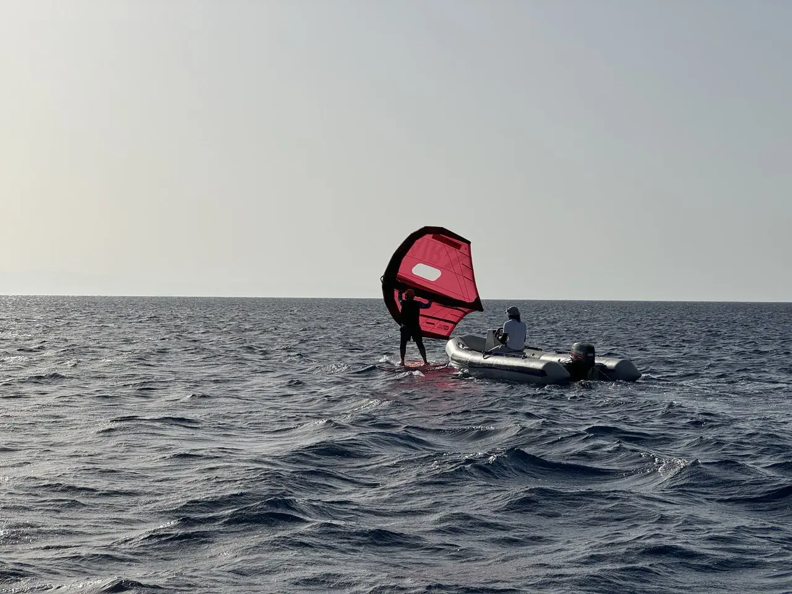
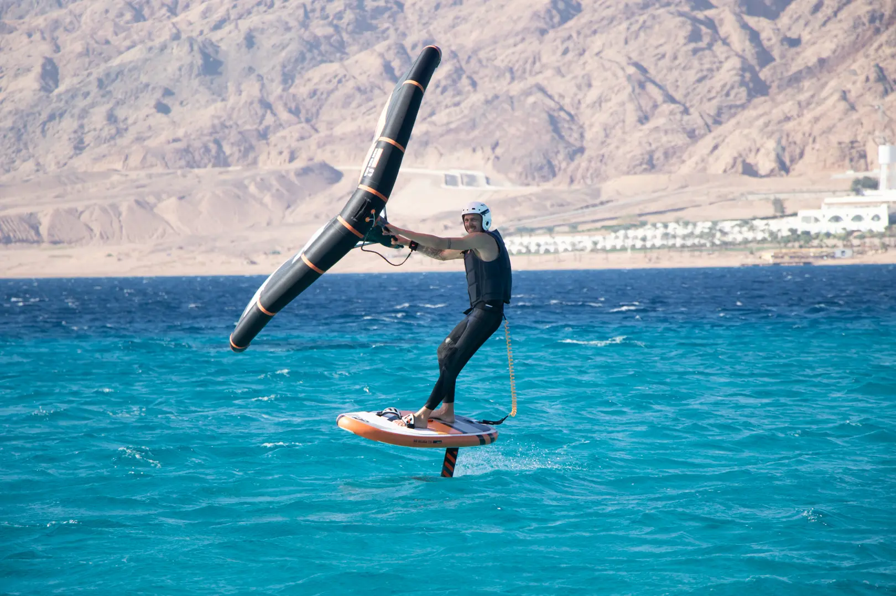
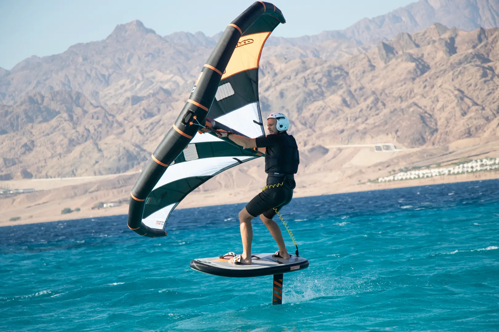
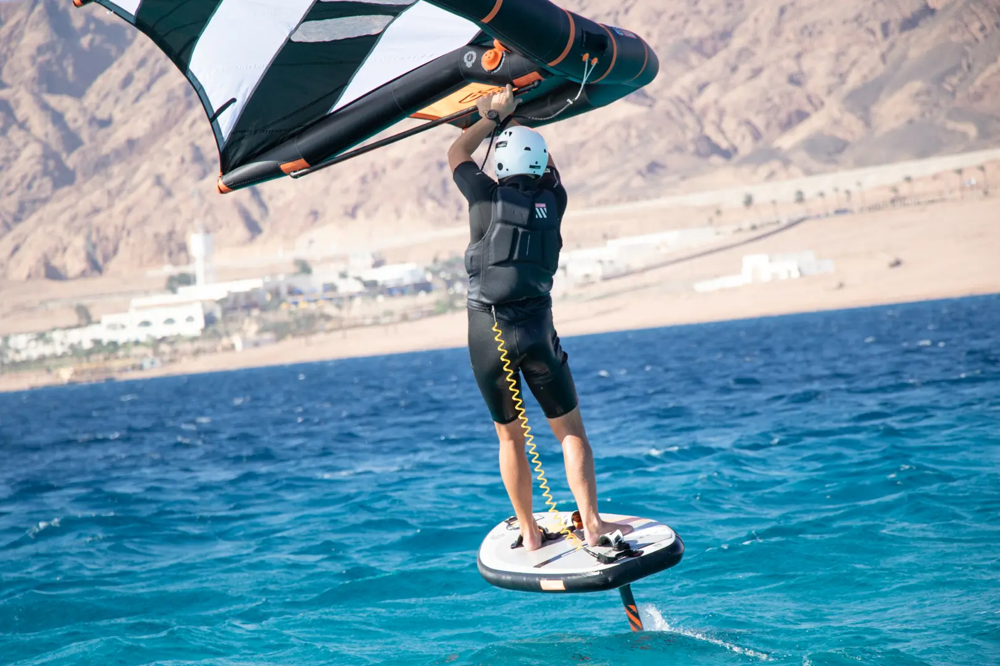

Вингфойл — удивительный спорт, сочетающий свободу полёта и единение с водой. Если вы только задумываетесь о первых шагах, важно начать правильно. Разберём, почему обучение с инструктором ускоряет прогресс, какие этапы вас ждут и почему вингфойл подходит для катания где угодно: от тихих озёр до океанских волн.



Безопасный старт
Почему стоит начать с инструктором?
Обучение вингфойлу с профессионалом — это не просто совет, а необходимость.
Инструктор поможет:
- Безопасно освоить базовые навыки: управление крылом, баланс на доске, стабильный полёт и повороты.
- Избежать типичных ошибок: согнутых рук, неправильного управления вингом и стойки, из-за которой мышцы устают сильнее.
- Быстро перейти к полётам на фойле: урок «Фойл + лодка» позволяет сосредоточиться на контроле высоты и стабильном полёте.
В Дахабе с его устойчивым ветром и тёплой водой занятия проходят в идеальных условиях даже для новичков.



Путь к самостоятельному катанию
От первых шагов до первых волн
Каждый этап в школе Wingfoil Vetratoria построен так, чтобы вы постепенно раскрывали потенциал этого спорта.
Управление вингом на SUP-доске
На первом уроке вы научитесь:
- держать крыло в балансе и чувствовать его тягу;
- делать базовые повороты и двигаться против ветра.
Этот этап — фундамент уверенного управления вингом. После того как ученик освоил возвращение в точку старта, SUP меняют на доску с фойлом и начинают учиться лететь, используя ветер.

Контроль фойла за лодкой
Если вы никогда не стояли на доске с фойлом, здесь вы:
- поймёте, как управлять подъёмной силой;
- научитесь стабильно лететь на доске с фойлом.
Инструктор сидит в лодке, а вы держитесь за фал. Лодка тянет вас вперёд, и вам остаётся сосредоточиться на работе ног и контроле доски.

Объединение навыков: Wing + Foil
Теперь вы соедините управление вингом и фойлом:
- отработаете старт с воды;
- достигнете стабильного полёта над водой;
- освоите катание змейкой;
- научитесь держать стабильный курс и подниматься выше по ветру.

Повороты и выход на волны
Для тех, кто уже летает, но хочет большего:
- базовые повороты Jibe и Tack;
- первые трюки и катание на волнах.
Этот этап открывает путь к самостоятельным приключениям на любых водоёмах.

Свобода путешествий
Озёра, реки и океан
Прелесть вингфойла в том, что он не требует идеальных условий. В Дахабе можно кататься практически каждый день. Вингфойл подходит и для озёр, где ветер бывает нестабильным и слабым, и для океанских волн — но сначала стоит научиться на ровной воде.
Снаряжение компактно, а навыки, полученные в школе, позволят путешествовать с вингфойлом по всему миру.